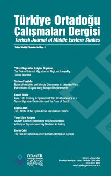

المجلات
Türkiye Ortadoğu Çalışmaları Dergisi - Özel Sayı

محرر (محررون): Doç.Dr. Lutfi Sunar
Sakarya Üniversitesi Ortadoğu Enstitüsü, 2018
يشترى
مقالات
İç Göçün Bölgesel Eşitsizlik Üzerindeki Rolü: Türkiye Örneği
Yüksel Bayraktar, Ayfer Özyılmaz
Savaşlar Arasında Ulusal Kimlik ve Kimlik Belgeleri: Suriye’deki Filistinlilerin Göç Hikayeleri /
Stefano Fogliata
19. Yüzyıldan Suriye İç Savaşına: Suriyeliler için Göç Destinasyonu Olarak Güney Amerika ve Brezilya Örneği
Segah Tekin
Suriye Krizinin Alman Siyaseti Üzerindeki Etkileri
Şeyma Akın
Mülteci Deneyimi ve Kültürel Etkileşim: Türkiye’de Suriyeli Üniversite Öğrencileri Üzerine Bir Çalışma
Yusuf Ziya Karipek
Suriyelilerin Uyum Sürecinde Türk STK’larının Rolü
Emrin Çelebi